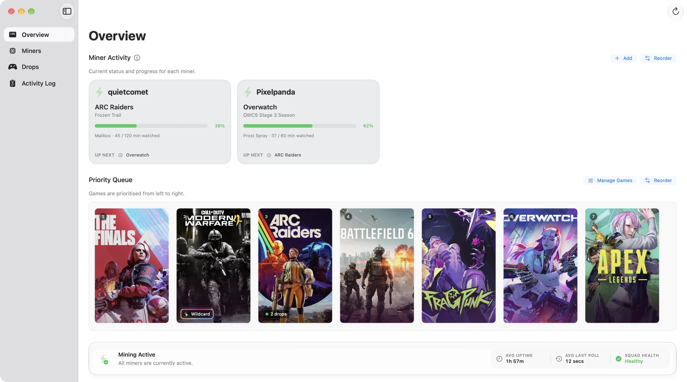
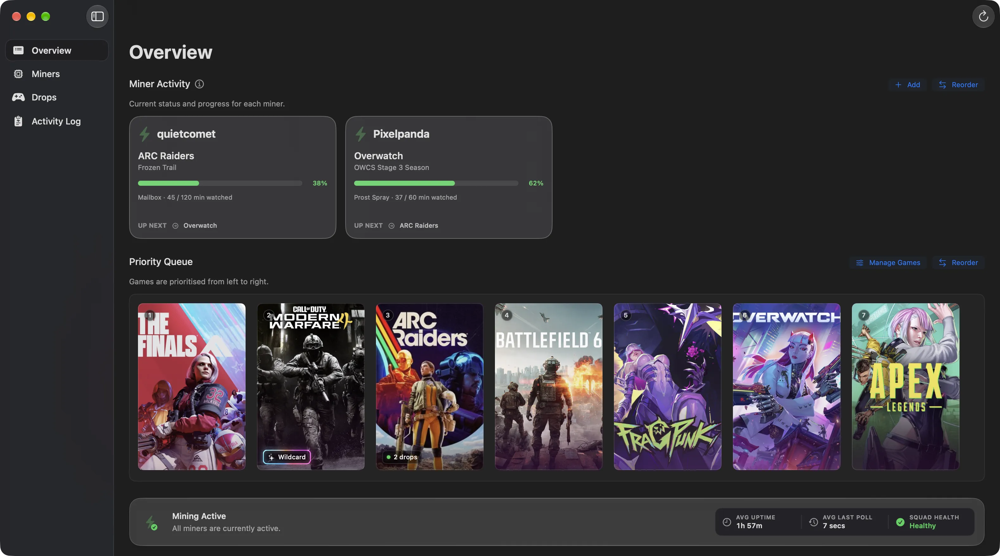

quietcometMining
The Finals
Broadcast Black Hover Pad
SwiftMiner quietly watches eligible Twitch streams, tracks campaign progress, and claims rewards across every account you add. No Docker. No Python.
Native macOS app · macOS 14+ · Free


A simplified loop with accelerated timing. Channel names and rewards are illustrative.
Everything needed to keep Drops moving, from picking the right stream to claiming the reward.
Watches eligible streams in the background and claims rewards the moment they unlock.
Run several Twitch accounts side by side, each with its own miner and progress.
Moves to the stream that makes the most progress on the drops you care about.
See what each account is watching and how far along it is, without opening Twitch.
Campaigns, games, and reward progress tracked in one list.
An optional web dashboard lets you sign in with Discord and look in from your phone.
A familiar native console. No dashboard to host.
From sign-in to claimed reward, with nothing to babysit.
Sign in with Twitch. SwiftMiner never sees your password.
Choose the games whose Drops you want.
It finds eligible streams and keeps progress moving.
Drops are claimed automatically when they complete.
Swift top to bottom, signed, notarized, and self-updating.
Free, native, and built for the Mac you already have running.